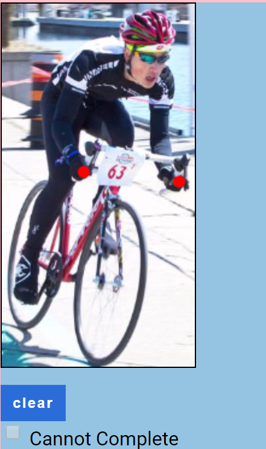
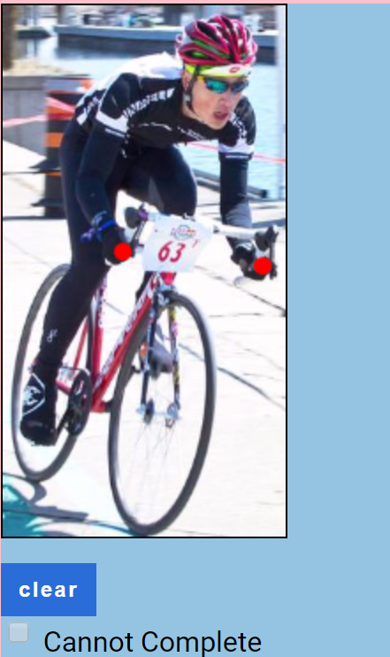

Please click where the contacts point are on the bike even if the object part is occluded (covered up) by the person's actions.


Even if the human within the image is not touching the hand contact point associated with the action riding with his hand , please click the proper contact point for the action on the object anyway.


Even if no human is present in the image at all, please click where the human would contact the object with his hand for the action riding .


If the contact points are unclear, out of frame, or you cannot select them for any other reason, please check the Cannot Complete box. Once this box is selected, you will not be able to select any points on the image until it is unselected.


Even if the human is touching the object somewhere else other than the hand contact point for the action riding, click the contact points for the appropriate action and not where the human is actually touching the object.


Even if the human is contacting the object correctly for the given action mode, but not touching all correct contact points, please label all contact points anyway.